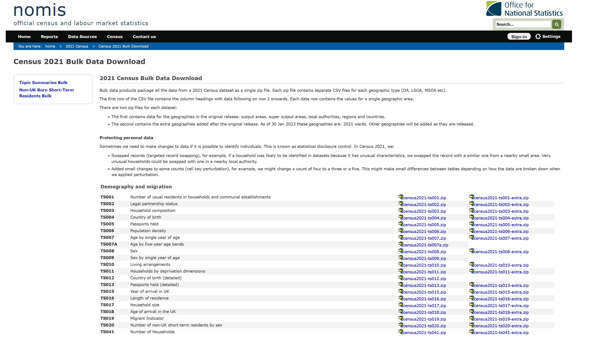
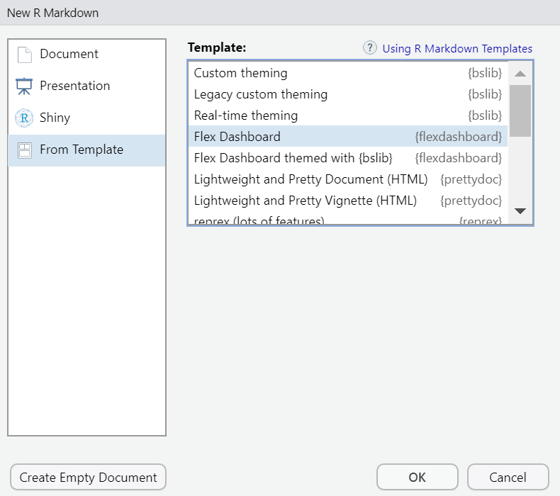
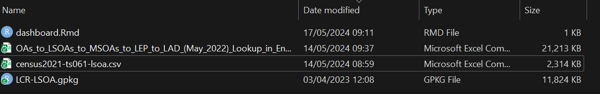
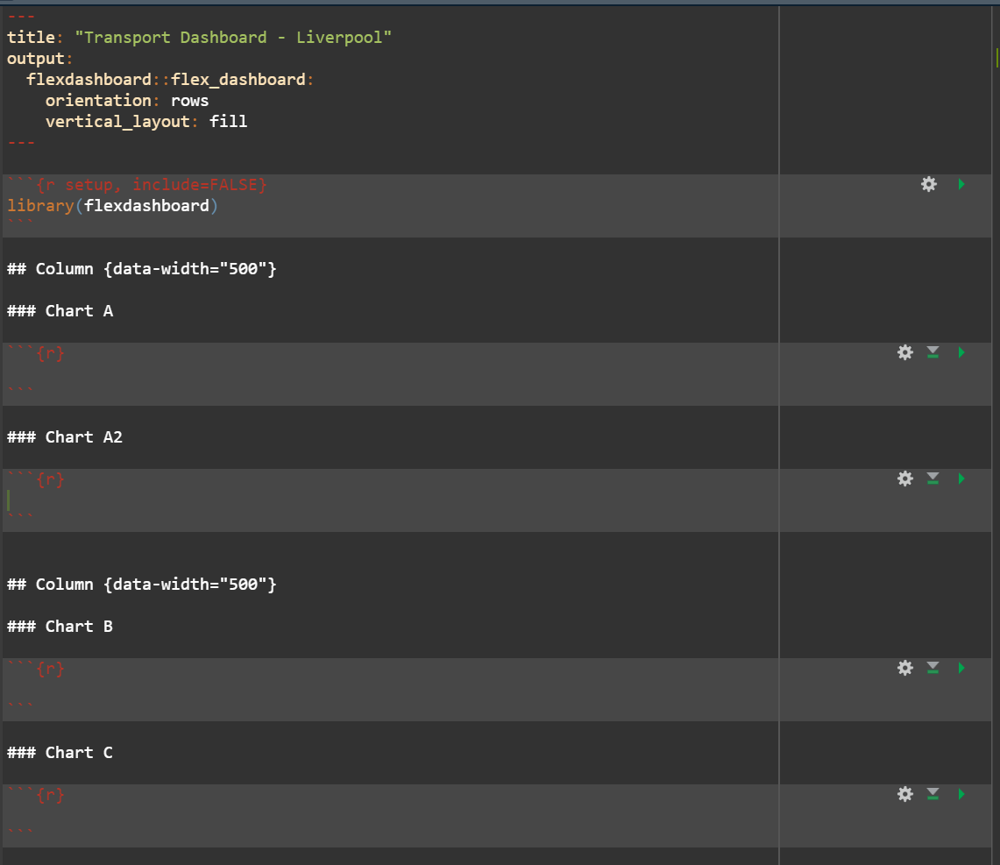
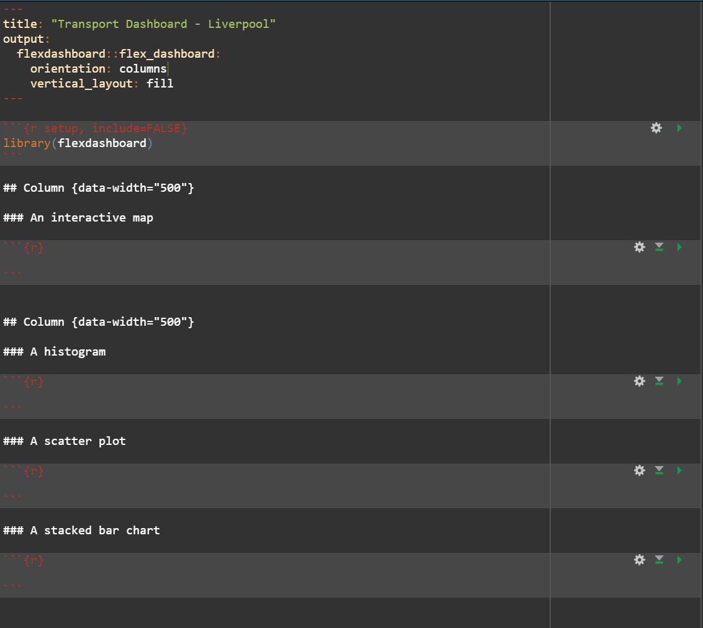
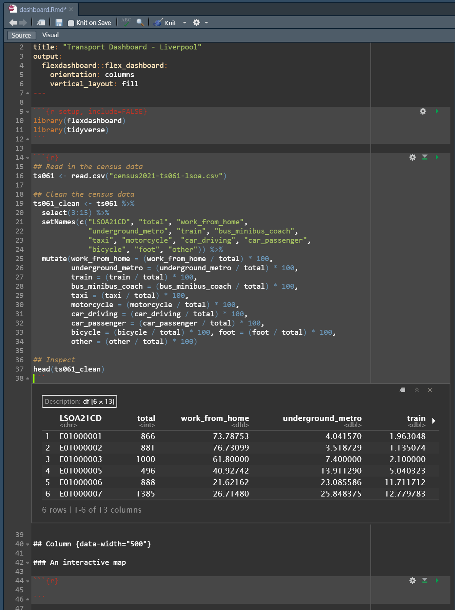
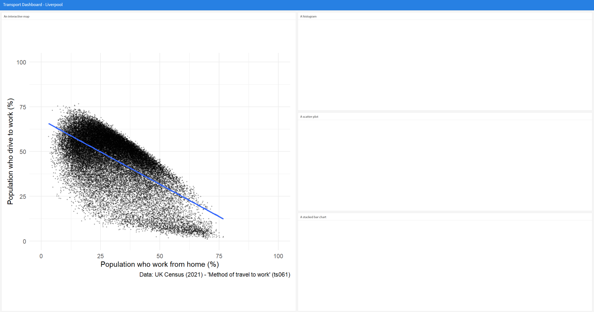

url <- "https://www.nomisweb.co.uk/output/census/2021/census2021-ts061.zip"
url[1] "https://www.nomisweb.co.uk/output/census/2021/census2021-ts061.zip"
By the end of today’s session you should be able to:
Web services make their data easily accessible to computer programs like R through use of an Application Programming Interface (API). Today’s practical will teach you how to access data from APIs, and load them into your R environment for analysis.
To download data from an API you need to send a HTTP request to a server, which tells the server to return the specific parcel of data that matches the criteria in the HTTP request.
For example, on NOMIS there is a page called ‘Census 2021 Bulk Data Download’, which contains .zip files for different tables of data available from the latest census.
Now you should go to the ‘Census 2021 Bulk Data Download’ page, and see what it contains.

There are lots of files on the web page - e.g. census2021-ts001.zip, census2021-ts007a.zip.
You can click on these files individually, download them to your PC, unzip them and read them into R. Alternatively, we can programmatically download the data directly from the webpage. If you ‘right click’ on one of the .zip files and press ‘copy link’, you will have a URL which can access that specific .zip file, as below:
url <- "https://www.nomisweb.co.uk/output/census/2021/census2021-ts061.zip"
url[1] "https://www.nomisweb.co.uk/output/census/2021/census2021-ts061.zip"The specific URL above relates to table TS061 - “Method of Travel to Work”, which is the same dataset we have been using throughout this course.
Now I’m going to show you how to download the .zip file, and read in the file of data we used yesterday. This is a really basic example of using an API, which shows how you can download data from NOMIS into your environment, without having to physically go and download it, save it to a folder, unzip it and read it into memory.
First, let’s download the .zip file - this line of code downloads the .zip file to your local machine. It creates a new file in your working directory called ‘temp.zip’ - go and take a look!
## Download the .zip file, using the url set above
download.file(url, "temp.zip")Next we need to unzip the folder, to get to the datasets stored within:
## First set where you want the unzipped files to be stored
outDir <- "data/unzip"
## Unzip the folder to the data/unzip folder
unzip("temp.zip", exdir = outDir)Ok so now that you’ve downloaded the files to your local machine, we can look and see what files are available to us:
## Use list.files() to see what we unzipped
list.files("data/unzip")[1] "census2021-ts061-ctry.csv" "census2021-ts061-lsoa.csv"
[3] "census2021-ts061-ltla.csv" "census2021-ts061-msoa.csv"
[5] "census2021-ts061-oa.csv" "census2021-ts061-rgn.csv"
[7] "census2021-ts061-utla.csv" "metadata" Thankfully, NOMIS use a really standard naming protocol for their files, which makes it really easy to tell what each of the files contains. If you cast your mind back to yesterday, we used a file called “census2021-ts061-lsoa.csv”, which we provided to you as part of the course materials. However, as you can see from the code above, you have now programmatically downloaded the same file, which we can read in:
## Read in the LSOA census data
db <- read.csv("data/unzip/census2021-ts061-lsoa.csv")Solution 2
## Set the new URL
url2 <- "https://www.nomisweb.co.uk/output/census/2021/census2021-ts066.zip"
## Download the files
download.file(url2, "temp2.zip")
## Unzip the files
outDir2 <- "data/unzip2"
## Unzip the folder to the data/unzip folder
unzip("temp2.zip", exdir = outDir2)
## Read in the LSOA census data
db2 <- read.csv("data/unzip2/census2021-ts066-lsoa.csv")
## Select some columns to work with, and calculate % student
db2_clean <- db2 %>%
select(geography.code, Economic.activity.status..Total..All.usual.residents.aged.16.years.and.over, Economic.activity.status..Economically.inactive..Student) %>%
setNames(c("LSOA21CD", "total", "student")) %>%
mutate(student = (student / total) * 100)Solution 3
## Produce a histogram
ggplot(data = db2_clean, aes(x = student)) +
geom_density(fill = "orange") +
labs(x = "Population who are students (%)", y = "Number of LSOAs",
caption = "Data: UK Census (2021) - 'Economic Activity Status' (ts066)") +
theme_minimal()So what have we achieved?
But what if you want to automate this download in a much quicker manner. The NOMIS API is a good way of doing this (and we’ll be discussing this shortly), but the other way you can do this is through the use of functions.
Functions are “self contained modules of code that accomplish a specific task”. They normally take data in soem form, perform a number of modifications to it, and then return some form of result.
The basic syntax of a function is as follows:
## Specify a new function
function1 <- function(x) {
}There are three important things to notice here:
function1) - enables you to call the function at a later point.function(x)) - is the input data or parameter that you are going to be using.{}) - anything within the curly brackets will be a series of steps that are applied.So a basic example is we can ask the function to return the first five rows of x:
## Specify a new function - first five
firstfive <- function(x) {
head(x)
}Now you need to run the function on an object - let’s do it on our census dataset:
## Apply the function
firstfive(db) date geography geography.code
1 2021 City of London 001A E01000001
2 2021 City of London 001B E01000002
3 2021 City of London 001C E01000003
4 2021 City of London 001E E01000005
5 2021 Barking and Dagenham 016A E01000006
6 2021 Barking and Dagenham 015A E01000007
Method.of.travel.to.workplace..Total..All.usual.residents.aged.16.years.and.over.in.employment.the.week.before.the.census
1 866
2 881
3 1000
4 496
5 888
6 1385
Method.of.travel.to.workplace..Work.mainly.at.or.from.home
1 639
2 676
3 618
4 203
5 192
6 370
Method.of.travel.to.workplace..Underground..metro..light.rail..tram
1 35
2 31
3 74
4 69
5 205
6 358
Method.of.travel.to.workplace..Train
1 17
2 10
3 21
4 25
5 104
6 177
Method.of.travel.to.workplace..Bus..minibus.or.coach
1 13
2 15
3 26
4 44
5 60
6 117
Method.of.travel.to.workplace..Taxi
1 4
2 2
3 4
4 2
5 1
6 8
Method.of.travel.to.workplace..Motorcycle..scooter.or.moped
1 3
2 1
3 4
4 3
5 5
6 3
Method.of.travel.to.workplace..Driving.a.car.or.van
1 18
2 19
3 24
4 33
5 227
6 220
Method.of.travel.to.workplace..Passenger.in.a.car.or.van
1 0
2 3
3 7
4 1
5 10
6 21
Method.of.travel.to.workplace..Bicycle Method.of.travel.to.workplace..On.foot
1 24 109
2 25 92
3 62 143
4 18 90
5 6 61
6 21 71
Method.of.travel.to.workplace..Other.method.of.travel.to.work
1 4
2 7
3 17
4 8
5 17
6 19So, that’s a really basic example of how to use a function.
Let me show you how functions can be used to clean datasets programmatically:
## Function cleans the raw census dataset
cleandb <- function(x) {
## Select columns
out <- x %>%
select(geography.code,
Method.of.travel.to.workplace..Total..All.usual.residents.aged.16.years.and.over.in.employment.the.week.before.the.census,
Method.of.travel.to.workplace..Train) %>%
setNames(c("LSOA21CD", "total", "train")) %>%
mutate(pctTrain = (train / total) * 100)
## Return the new dataframe
return(out)
}Now that the function has been specified, you can pass your dataset through it:
## Pass census data through the new function
cleaned <- cleandb(db)
## Look at it
head(cleaned) LSOA21CD total train pctTrain
1 E01000001 866 17 1.963048
2 E01000002 881 10 1.135074
3 E01000003 1000 21 2.100000
4 E01000005 496 25 5.040323
5 E01000006 888 104 11.711712
6 E01000007 1385 177 12.779783There are lots of reasons why this approach is useful:
However, perhaps the most useful thing functions can do, is be used to apply an API query and return a cleaned dataset for your use.
Let’s have a look at an example: tidylodes.
We can implement some of these techniques and ideas to automate scraping of data from NOMIS.
For example, take the URL we set above:
url[1] "https://www.nomisweb.co.uk/output/census/2021/census2021-ts061.zip"If we wrote a function that could enable specification of a different table number, we could build a pipeline where you only have to change a couple of characters to return a cleaned dataset for your reports.
For example, the other URL I provided in my solution above:
url2[1] "https://www.nomisweb.co.uk/output/census/2021/census2021-ts066.zip"You’ll notice the only difference with this URL is the ts066 string at the end of the URL. Let’s start building a function that can swap these different characters in and out:
downloadNOMIS <- function(x = "ts061") {
## Create the URL, based on the character supplied in x
url <- paste0("https://www.nomisweb.co.uk/output/census/2021/census2021-", x, ".zip")
return(url)
}Let’s test this:
downloadNOMIS("ts061")[1] "https://www.nomisweb.co.uk/output/census/2021/census2021-ts061.zip"And then with a different table number
downloadNOMIS("ts066")[1] "https://www.nomisweb.co.uk/output/census/2021/census2021-ts066.zip"Ok, so now we need to add to the function, to get R to download from the URL:
downloadNOMIS <- function(x = "ts061") {
## Create the URL, based on the character supplied in x
url <- paste0("https://www.nomisweb.co.uk/output/census/2021/census2021-", x, ".zip")
## Download
download.file(url, "table.zip")
}Test it:
downloadNOMIS("ts066")Now if you go into your working directory, you should have a .zip folder called table.
Final steps: unzipping and checking all the files are there:
downloadNOMIS <- function(x = "ts061") {
## Create the URL, based on the character supplied in x
url <- paste0("https://www.nomisweb.co.uk/output/census/2021/census2021-", x, ".zip")
## Download
download.file(url, "table.zip")
## Unzip the files
outDir2 <- "data/tableUZ"
## Unzip the folder to the data/unzip folder
unzip("table.zip", exdir = outDir2)
}Now run the command for a table of your choosing:
downloadNOMIS("ts004")You can check this has worked by looking at the files available in the tableUZ folder, set up in the function above:
list.files("data/tableUZ") [1] "census2021-ts001-ctry.csv" "census2021-ts001-lsoa.csv"
[3] "census2021-ts001-ltla.csv" "census2021-ts001-msoa.csv"
[5] "census2021-ts001-oa.csv" "census2021-ts001-rgn.csv"
[7] "census2021-ts001-utla.csv" "census2021-ts002-ctry.csv"
[9] "census2021-ts002-lsoa..csv" "census2021-ts002-ltla.csv"
[11] "census2021-ts002-msoa..csv" "census2021-ts002-oa.csv"
[13] "census2021-ts002-rgn.csv" "census2021-ts002-utla.csv"
[15] "census2021-ts003-ctry.csv" "census2021-ts003-lsoa.csv"
[17] "census2021-ts003-ltla.csv" "census2021-ts003-msoa.csv"
[19] "census2021-ts003-oa.csv" "census2021-ts003-rgn.csv"
[21] "census2021-ts003-utla.csv" "census2021-ts004-ctry.csv"
[23] "census2021-ts004-llta.csv" "census2021-ts004-lsoa.csv"
[25] "census2021-ts004-msoa.csv" "census2021-ts004-oa.csv"
[27] "census2021-ts004-rgn.csv" "census2021-ts004-ulta.csv"
[29] "metadata" Awesome! You have created a function that enables you to have access to tables of data from NOMIS very easily. Finally, you might be interested in asking the function to read in a specific file - you can do this easily from NOMIS as the file naming protocols are very organised.
downloadNOMIS <- function(x = "ts061") {
## Create the URL, based on the character supplied in x
url <- paste0("https://www.nomisweb.co.uk/output/census/2021/census2021-", x, ".zip")
## Download
download.file(url, "table.zip")
## Unzip the files
outDir2 <- "data/tableUZ"
## Unzip the folder to the data/unzip folder
unzip("table.zip", exdir = outDir2)
## Read in the regional level data
db <- read.csv(paste0("data/tableUZ/census2021-", x, "-rgn.csv"))
return(db)
}Test it
## Download and read in
t <- downloadNOMIS("ts003")
## Inspect
head(t) date geography geography.code
1 2021 North East E12000001
2 2021 North West E12000002
3 2021 Yorkshire and The Humber E12000003
4 2021 East Midlands E12000004
5 2021 West Midlands E12000005
6 2021 East E12000006
Household.composition..Total..measures..Value
1 1175683
2 3153406
3 2330657
4 2037334
5 2429493
6 2628778
Household.composition..One.person.household..measures..Value
1 395924
2 1014913
3 733558
4 597177
5 725807
6 759808
Household.composition..One.person.household..Aged.66.years.and.over..measures..Value
1 167832
2 420823
3 309721
4 264630
5 318108
6 347326
Household.composition..One.person.household..Other..measures..Value
1 228092
2 594090
3 423837
4 332547
5 407699
6 412482
Household.composition..Single.family.household..measures..Value
1 731124
2 1961888
3 1471340
4 1317959
5 1549864
6 1714480
Household.composition..Single.family.household..All.aged.66.years.and.over..measures..Value
1 112397
2 278671
3 221778
4 209388
5 231216
6 272511
Household.composition..Single.family.household..Married.or.civil.partnership.couple..measures..Value
1 331330
2 904487
3 687238
4 632498
5 741413
6 848252
Household.composition..Single.family.household..Married.or.civil.partnership.couple..No.children..measures..Value
1 129507
2 312295
3 259341
4 236710
5 248508
6 287375
Household.composition..Single.family.household..Married.or.civil.partnership.couple..Dependent.children..measures..Value
1 135625
2 412594
3 305595
4 280529
5 345254
6 406526
Household.composition..Single.family.household..Married.or.civil.partnership.couple..All.children.non.dependent..measures..Value
1 66198
2 179598
3 122302
4 115259
5 147651
6 154351
Household.composition..Single.family.household..Cohabiting.couple.family..measures..Value
1 137302
2 373006
3 291532
4 253787
5 272420
6 309554
Household.composition..Single.family.household..Cohabiting.couple.family..No.children..measures..Value
1 70052
2 192405
3 153710
4 134608
5 137757
6 164306
Household.composition..Single.family.household..Cohabiting.couple.family..With.dependent.children..measures..Value
1 57542
2 155174
3 119334
4 103354
5 115766
6 125253
Household.composition..Single.family.household..Cohabiting.couple.family..All.children.non.dependent..measures..Value
1 9708
2 25427
3 18488
4 15825
5 18897
6 19995
Household.composition..Single.family.household..Lone.parent.family..measures..Value
1 143417
2 382496
3 256459
4 209278
5 287205
6 268439
Household.composition..Single.family.household..Lone.parent.family..With.dependent.children..measures..Value
1 94314
2 241480
3 168688
4 132437
5 180039
6 166653
Household.composition..Single.family.household..Lone.parent.family..All.children.non.dependent..measures..Value
1 49103
2 141016
3 87771
4 76841
5 107166
6 101786
Household.composition..Single.family.household..Other.single.family.household..measures..Value
1 6678
2 23228
3 14333
4 13008
5 17610
6 15724
Household.composition..Single.family.household..Other.single.family.household..Other.family.composition..measures..Value
1 6678
2 23228
3 14333
4 13008
5 17610
6 15724
Household.composition..Other.household.types..measures..Value
1 48635
2 176605
3 125759
4 122198
5 153822
6 154490
Household.composition..Other.household.types..With.dependent.children..measures..Value
1 18689
2 73084
3 51557
4 49543
5 72712
6 63676
Household.composition..Other.household.types..Other..including.all.full.time.students.and.all.aged.66.years.and.over..measures..Value
1 29946
2 103521
3 74202
4 72655
5 81110
6 90814The final thing I want to show you before we move off of functions is how to apply functions sequentially. Functions can be applied to lists really easily using the lapply() command. This means you could supply multiple names of tables that you want, and get R to download, read and clean them for you using the techniques I have just shown you.
For example, take a list like this:
ls <- c("ts001", "ts002", "ts003")
ls[1] "ts001" "ts002" "ts003"We can apply the downloadNOMIS function to these three tables, to read in the regional-level tables. The way to do this is to use the lapply command, which takes as arguments 1) a list and 2) a function to apply over the list.
In our case this would be:
## Download three tables from NOMIS
tables <- lapply(ls, downloadNOMIS)Once this has finished running, you are left with a list of tables, see:
str(tables)List of 3
$ :'data.frame': 10 obs. of 6 variables:
..$ date : int [1:10] 2021 2021 2021 2021 2021 2021 2021 2021 2021 2021
..$ geography : chr [1:10] "North East" "North West" "Yorkshire and The Humber" "East Midlands" ...
..$ geography.code : chr [1:10] "E12000001" "E12000002" "E12000003" "E12000004" ...
..$ Residence.type..Total..measures..Value : int [1:10] 2647013 7417397 5480774 4880054 5950757 6335074 8799728 9278065 5701186 3107494
..$ Residence.type..Lives.in.a.household..measures..Value : int [1:10] 2594828 7290560 5376740 4778018 5854512 6238659 8699834 9088552 5582599 3051549
..$ Residence.type..Lives.in.a.communal.establishment..measures..Value: int [1:10] 52185 126837 104034 102036 96245 96415 99894 189513 118587 55945
$ :'data.frame': 10 obs. of 21 variables:
..$ date : int [1:10] 2021 2021 2021 2021 2021 2021 2021 2021 2021 2021
..$ geography : chr [1:10] "North East" "North West" "Yorkshire and The Humber" "East Midlands" ...
..$ geography.code : chr [1:10] "E12000001" "E12000002" "E12000003" "E12000004" ...
..$ Marital.and.civil.partnership.status..Total..measures..Value : int [1:10] 2178960 6025636 4460298 3998045 4801329 5148282 7103985 7554580 4735840 2559415
..$ Marital.and.civil.partnership.status..Never.married.and.never.registered.a.civil.partnership..measures..Value : int [1:10] 829791 2372877 1679861 1442049 1781208 1791650 3282327 2628945 1641415 951656
..$ Marital.and.civil.partnership.status..Married.or.in.a.registered.civil.partnership..measures..Value : int [1:10] 937083 2575107 1971162 1832929 2172973 2429227 2843230 3596697 2203234 1121459
..$ Marital.and.civil.partnership.status..Married.or.in.a.registered.civil.partnership..Married..measures..Value : int [1:10] 933521 2565016 1962879 1825699 2164831 2419645 2819968 3579942 2192574 1116418
..$ Marital.and.civil.partnership.status..Married.or.in.a.registered.civil.partnership..Married..Opposite.sex..measures..Value : int [1:10] 928213 2548818 1951385 1815824 2153949 2407966 2793106 3557428 2179876 1109656
..$ Marital.and.civil.partnership.status..Married.or.in.a.registered.civil.partnership..Married..Same.sex..measures..Value : int [1:10] 5308 16198 11494 9875 10882 11679 26862 22514 12698 6762
..$ Marital.and.civil.partnership.status..Married.or.in.a.registered.civil.partnership..In.a.registered.civil.partnership..measures..Value : int [1:10] 3562 10091 8283 7230 8142 9582 23262 16755 10660 5041
..$ Marital.and.civil.partnership.status..Married.or.in.a.registered.civil.partnership..In.a.registered.civil.partnership..Opposite.sex..measures..Value : int [1:10] 1312 3408 2975 2704 3304 3470 7946 5419 3528 1730
..$ Marital.and.civil.partnership.status..Married.or.in.a.registered.civil.partnership..In.a.registered.civil.partnership..Same.sex..measures..Value : int [1:10] 2250 6683 5308 4526 4838 6112 15316 11336 7132 3311
..$ Marital.and.civil.partnership.status..Separated..but.still.legally.married.or.still.legally.in.a.civil.partnership..measures..Value : int [1:10] 54358 136428 102350 88980 110711 113455 165884 161395 99960 52468
..$ Marital.and.civil.partnership.status..Separated..but.still.legally.married.or.still.legally.in.a.civil.partnership..Separated..but.still.married..measures..Value : int [1:10] 54029 135494 101660 88398 110090 112791 164083 160211 99224 52074
..$ Marital.and.civil.partnership.status..Separated..but.still.legally.married.or.still.legally.in.a.civil.partnership..Separated..but.still.in.a.registered.civil.partnership..measures..Value: int [1:10] 329 934 690 582 621 664 1801 1184 736 394
..$ Marital.and.civil.partnership.status..Divorced.or.civil.partnership.dissolved..measures..Value : int [1:10] 206974 550417 420235 378618 424612 490720 516854 705127 478079 252707
..$ Marital.and.civil.partnership.status..Divorced.or.civil.partnership.dissolved..Divorced..measures..Value : int [1:10] 206505 549121 419338 377750 423752 489726 514117 703179 476871 252159
..$ Marital.and.civil.partnership.status..Divorced.or.civil.partnership.dissolved..Formerly.in.a.civil.partnership.now.legally.dissolved..measures..Value : int [1:10] 469 1296 897 868 860 994 2737 1948 1208 548
..$ Marital.and.civil.partnership.status..Widowed.or.surviving.civil.partnership.partner..measures..Value : int [1:10] 150754 390807 286690 255469 311825 323230 295690 462416 313152 181125
..$ Marital.and.civil.partnership.status..Widowed.or.surviving.civil.partnership.partner..Widowed..measures..Value : int [1:10] 150610 390312 286369 255208 311517 322831 294837 461641 312673 180925
..$ Marital.and.civil.partnership.status..Widowed.or.surviving.civil.partnership.partner..Surviving.partner.from.civil.partnership..measures..Value : int [1:10] 144 495 321 261 308 399 853 775 479 200
$ :'data.frame': 10 obs. of 25 variables:
..$ date : int [1:10] 2021 2021 2021 2021 2021 2021 2021 2021 2021 2021
..$ geography : chr [1:10] "North East" "North West" "Yorkshire and The Humber" "East Midlands" ...
..$ geography.code : chr [1:10] "E12000001" "E12000002" "E12000003" "E12000004" ...
..$ Household.composition..Total..measures..Value : int [1:10] 1175683 3153406 2330657 2037334 2429493 2628778 3423890 3807967 2448881 1347114
..$ Household.composition..One.person.household..measures..Value : int [1:10] 395924 1014913 733558 597177 725807 759808 1001983 1081739 741323 429559
..$ Household.composition..One.person.household..Aged.66.years.and.over..measures..Value : int [1:10] 167832 420823 309721 264630 318108 347326 313049 503974 356329 196056
..$ Household.composition..One.person.household..Other..measures..Value : int [1:10] 228092 594090 423837 332547 407699 412482 688934 577765 384994 233503
..$ Household.composition..Single.family.household..measures..Value : int [1:10] 731124 1961888 1471340 1317959 1549864 1714480 1986263 2473698 1556311 850096
..$ Household.composition..Single.family.household..All.aged.66.years.and.over..measures..Value : int [1:10] 112397 278671 221778 209388 231216 272511 148209 386986 284123 138010
..$ Household.composition..Single.family.household..Married.or.civil.partnership.couple..measures..Value : int [1:10] 331330 904487 687238 632498 741413 848252 977165 1260379 747034 386697
..$ Household.composition..Single.family.household..Married.or.civil.partnership.couple..No.children..measures..Value : int [1:10] 129507 312295 259341 236710 248508 287375 256539 420975 288960 145009
..$ Household.composition..Single.family.household..Married.or.civil.partnership.couple..Dependent.children..measures..Value : int [1:10] 135625 412594 305595 280529 345254 406526 541099 619300 328880 160019
..$ Household.composition..Single.family.household..Married.or.civil.partnership.couple..All.children.non.dependent..measures..Value : int [1:10] 66198 179598 122302 115259 147651 154351 179527 220104 129194 81669
..$ Household.composition..Single.family.household..Cohabiting.couple.family..measures..Value : int [1:10] 137302 373006 291532 253787 272420 309554 349419 433453 288505 155649
..$ Household.composition..Single.family.household..Cohabiting.couple.family..No.children..measures..Value : int [1:10] 70052 192405 153710 134608 137757 164306 229339 240827 163957 77093
..$ Household.composition..Single.family.household..Cohabiting.couple.family..With.dependent.children..measures..Value : int [1:10] 57542 155174 119334 103354 115766 125253 101486 166572 108519 67941
..$ Household.composition..Single.family.household..Cohabiting.couple.family..All.children.non.dependent..measures..Value : int [1:10] 9708 25427 18488 15825 18897 19995 18594 26054 16029 10615
..$ Household.composition..Single.family.household..Lone.parent.family..measures..Value : int [1:10] 143417 382496 256459 209278 287205 268439 453937 369841 223832 161836
..$ Household.composition..Single.family.household..Lone.parent.family..With.dependent.children..measures..Value : int [1:10] 94314 241480 168688 132437 180039 166653 267852 227161 138453 102274
..$ Household.composition..Single.family.household..Lone.parent.family..All.children.non.dependent..measures..Value : int [1:10] 49103 141016 87771 76841 107166 101786 186085 142680 85379 59562
..$ Household.composition..Single.family.household..Other.single.family.household..measures..Value : int [1:10] 6678 23228 14333 13008 17610 15724 57533 23039 12817 7904
..$ Household.composition..Single.family.household..Other.single.family.household..Other.family.composition..measures..Value : int [1:10] 6678 23228 14333 13008 17610 15724 57533 23039 12817 7904
..$ Household.composition..Other.household.types..measures..Value : int [1:10] 48635 176605 125759 122198 153822 154490 435644 252530 151247 67459
..$ Household.composition..Other.household.types..With.dependent.children..measures..Value : int [1:10] 18689 73084 51557 49543 72712 63676 160669 93493 46913 26078
..$ Household.composition..Other.household.types..Other..including.all.full.time.students.and.all.aged.66.years.and.over..measures..Value: int [1:10] 29946 103521 74202 72655 81110 90814 274975 159037 104334 41381You can select one out individually:
## Select the first table
table1 <- tables[[1]]
head(table1) date geography geography.code
1 2021 North East E12000001
2 2021 North West E12000002
3 2021 Yorkshire and The Humber E12000003
4 2021 East Midlands E12000004
5 2021 West Midlands E12000005
6 2021 East E12000006
Residence.type..Total..measures..Value
1 2647013
2 7417397
3 5480774
4 4880054
5 5950757
6 6335074
Residence.type..Lives.in.a.household..measures..Value
1 2594828
2 7290560
3 5376740
4 4778018
5 5854512
6 6238659
Residence.type..Lives.in.a.communal.establishment..measures..Value
1 52185
2 126837
3 104034
4 102036
5 96245
6 96415Or because they all have the geography.code, geography and date column, you can just attach them into one big table. This relies on the use of the purrr package, which is full of useful tools for working with lists.
## Bind together
test <- tables %>%
reduce(left_join, by = c("date", "geography", "geography.code"))
## Have a look
colnames(test) [1] "date"
[2] "geography"
[3] "geography.code"
[4] "Residence.type..Total..measures..Value"
[5] "Residence.type..Lives.in.a.household..measures..Value"
[6] "Residence.type..Lives.in.a.communal.establishment..measures..Value"
[7] "Marital.and.civil.partnership.status..Total..measures..Value"
[8] "Marital.and.civil.partnership.status..Never.married.and.never.registered.a.civil.partnership..measures..Value"
[9] "Marital.and.civil.partnership.status..Married.or.in.a.registered.civil.partnership..measures..Value"
[10] "Marital.and.civil.partnership.status..Married.or.in.a.registered.civil.partnership..Married..measures..Value"
[11] "Marital.and.civil.partnership.status..Married.or.in.a.registered.civil.partnership..Married..Opposite.sex..measures..Value"
[12] "Marital.and.civil.partnership.status..Married.or.in.a.registered.civil.partnership..Married..Same.sex..measures..Value"
[13] "Marital.and.civil.partnership.status..Married.or.in.a.registered.civil.partnership..In.a.registered.civil.partnership..measures..Value"
[14] "Marital.and.civil.partnership.status..Married.or.in.a.registered.civil.partnership..In.a.registered.civil.partnership..Opposite.sex..measures..Value"
[15] "Marital.and.civil.partnership.status..Married.or.in.a.registered.civil.partnership..In.a.registered.civil.partnership..Same.sex..measures..Value"
[16] "Marital.and.civil.partnership.status..Separated..but.still.legally.married.or.still.legally.in.a.civil.partnership..measures..Value"
[17] "Marital.and.civil.partnership.status..Separated..but.still.legally.married.or.still.legally.in.a.civil.partnership..Separated..but.still.married..measures..Value"
[18] "Marital.and.civil.partnership.status..Separated..but.still.legally.married.or.still.legally.in.a.civil.partnership..Separated..but.still.in.a.registered.civil.partnership..measures..Value"
[19] "Marital.and.civil.partnership.status..Divorced.or.civil.partnership.dissolved..measures..Value"
[20] "Marital.and.civil.partnership.status..Divorced.or.civil.partnership.dissolved..Divorced..measures..Value"
[21] "Marital.and.civil.partnership.status..Divorced.or.civil.partnership.dissolved..Formerly.in.a.civil.partnership.now.legally.dissolved..measures..Value"
[22] "Marital.and.civil.partnership.status..Widowed.or.surviving.civil.partnership.partner..measures..Value"
[23] "Marital.and.civil.partnership.status..Widowed.or.surviving.civil.partnership.partner..Widowed..measures..Value"
[24] "Marital.and.civil.partnership.status..Widowed.or.surviving.civil.partnership.partner..Surviving.partner.from.civil.partnership..measures..Value"
[25] "Household.composition..Total..measures..Value"
[26] "Household.composition..One.person.household..measures..Value"
[27] "Household.composition..One.person.household..Aged.66.years.and.over..measures..Value"
[28] "Household.composition..One.person.household..Other..measures..Value"
[29] "Household.composition..Single.family.household..measures..Value"
[30] "Household.composition..Single.family.household..All.aged.66.years.and.over..measures..Value"
[31] "Household.composition..Single.family.household..Married.or.civil.partnership.couple..measures..Value"
[32] "Household.composition..Single.family.household..Married.or.civil.partnership.couple..No.children..measures..Value"
[33] "Household.composition..Single.family.household..Married.or.civil.partnership.couple..Dependent.children..measures..Value"
[34] "Household.composition..Single.family.household..Married.or.civil.partnership.couple..All.children.non.dependent..measures..Value"
[35] "Household.composition..Single.family.household..Cohabiting.couple.family..measures..Value"
[36] "Household.composition..Single.family.household..Cohabiting.couple.family..No.children..measures..Value"
[37] "Household.composition..Single.family.household..Cohabiting.couple.family..With.dependent.children..measures..Value"
[38] "Household.composition..Single.family.household..Cohabiting.couple.family..All.children.non.dependent..measures..Value"
[39] "Household.composition..Single.family.household..Lone.parent.family..measures..Value"
[40] "Household.composition..Single.family.household..Lone.parent.family..With.dependent.children..measures..Value"
[41] "Household.composition..Single.family.household..Lone.parent.family..All.children.non.dependent..measures..Value"
[42] "Household.composition..Single.family.household..Other.single.family.household..measures..Value"
[43] "Household.composition..Single.family.household..Other.single.family.household..Other.family.composition..measures..Value"
[44] "Household.composition..Other.household.types..measures..Value"
[45] "Household.composition..Other.household.types..With.dependent.children..measures..Value"
[46] "Household.composition..Other.household.types..Other..including.all.full.time.students.and.all.aged.66.years.and.over..measures..Value" One of the things that you see more commonly in practice is the construction of specific R packages used to access APIs, with supporting documentation and specific functions that make it easier to use the API.
One such example is nomisr, which is an R package that was built to enable users to query data from NOMIS. It is free to access and contains up-to-date official statistics including data from the latest Census, Labour Force Survey and DWP benefit statistics.
In the section that follows, I’m going to be showing you how to use the nomisr package to download datasets.
Vast amounts of data are available through NOMIS, so you need to use some of the different functions within nomisr to identify the specific datasets you want to use. An example is presented below which searches for datasets within NOMIS that are specifically about ‘Travel’:
## Search for data on Labour Force
search <- nomis_search("*Travel*")This returns a dataframe (which you should see in your environment) that describes all of the different NOMIS held datasets where ‘Travel’ is mentioned. The column perhaps of most interest is the short name for the different datasets, which you can inspect below:
## Have a look at the first six datasets
head(search$name.value)[1] "2001 census - UK travel flows (local authority)"
[2] "2001 census - Scottish travel flows (local authority)"
[3] "2001 census - UK travel flows (ward)"
[4] "QS702EW - Distance travelled to work"
[5] "WD702EW - Distance travelled to work (Workday population)"
[6] "WP702EW - Distance travelled to work (Workplace population)"If you open up the dataframe in your environment and scroll down you should see one row has the value - TS061 - Method used to travel to work - which is the one we’ve been using a lot in this practical.
We can filter to this row very easily using the filter() command that we introduced yesterday:
## Filter to row of interest
search_sub <- search %>%
filter(name.value == "TS061 - Method used to travel to work")
## Have a look at the result
search_sub# A tibble: 1 × 12
agencyid id uri version annotations.annotation components.attribute
<chr> <chr> <chr> <dbl> <list> <list>
1 NOMIS NM_2078_1 Nm-207… 1 <df [13 × 2]> <df [7 × 4]>
# ℹ 6 more variables: components.dimension <list>,
# components.primarymeasure.conceptref <chr>,
# components.timedimension.codelist <chr>,
# components.timedimension.conceptref <chr>, name.value <chr>,
# name.lang <chr>Notice how the table ID is NM_2078_1. We can get some metadata for this dataset very easily using the nomis_get_metadata() command. First, let’s see what measures are available:
## Supply the ID of the row we're interested in, and the second parameters specifies we'd like to know more about the measures
nomis_get_metadata(search_sub$id, "measures")# A tibble: 2 × 3
id label.en description.en
<chr> <chr> <chr>
1 20100 value value
2 20301 percent percent So for TS061, we can get both raw counts (‘value’) and percent. Notice how the ID for counts is 20100 and the ID for percent is 20301. Let’s now see what geographies are available:
## Supply the ID of the row we're interested in, and the second parameter specifies that we want to know more about geographies
nomis_get_metadata(search_sub$id, "geography")# A tibble: 3 × 4
id parentCode label.en description.en
<chr> <chr> <chr> <chr>
1 2092957703 <NA> England and Wales England and Wales
2 2092957699 <NA> England England
3 2092957700 2092957700 Wales Wales Ok, so this is telling us the different geographic levels we can download the data for. However, if we add an additional parameter to this, we can also see the specific geographic units that this data is available at:
## Add in an additional parameter
nomis_get_metadata(search_sub$id, "geography", "TYPE")# A tibble: 12 × 3
id label.en description.en
<chr> <chr> <chr>
1 TYPE150 2021 output areas 2021 output a…
2 TYPE151 2021 super output areas - lower layer 2021 super ou…
3 TYPE152 2021 super output areas - middle layer 2021 super ou…
4 TYPE153 2022 wards 2022 wards
5 TYPE154 2022 local authorities: districts 2022 local au…
6 TYPE155 2022 local authorities: counties 2022 local au…
7 TYPE168 2021 national parks 2021 national…
8 TYPE423 local authorities: county / unitary (as of April 2023) local authori…
9 TYPE424 local authorities: district / unitary (as of April 20… local authori…
10 TYPE459 local enterprise partnerships (as of April 2021) local enterpr…
11 TYPE480 regions regions
12 TYPE499 countries countries So there are a variety of different geographic levels at which we can download the dataset, including LSOA - see 2021 super output areas - lower layer. Notice how the ID for LSOAs is TYPE151.
Those steps we have just performed basically give us everything we need to download the dataset directly from the NOMIS API using the package, instead of downloading the .zip files directly. Let’s download the file - it could take a while! If you don’t understand any of the specific inputs to this line of code, feel free to shout Patrick to talk it through.
## Download the file
db_v2 <- nomis_get_data(id = "NM_2078_1", time = "latest", geography = c("TYPE151"), measures = "20301")Retrieving additional pages 1 of 17Retrieving additional pages 2 of 17Retrieving additional pages 3 of 17Retrieving additional pages 4 of 17Retrieving additional pages 5 of 17Retrieving additional pages 6 of 17Retrieving additional pages 7 of 17Retrieving additional pages 8 of 17Retrieving additional pages 9 of 17Retrieving additional pages 10 of 17Retrieving additional pages 11 of 17Retrieving additional pages 12 of 17Retrieving additional pages 13 of 17Retrieving additional pages 14 of 17Retrieving additional pages 15 of 17Retrieving additional pages 16 of 17Retrieving additional pages 17 of 17The format the data is presented in is not the most intuitive, so those reshaping skills we acquired yesterday are going to come in handy here again!
Firstly, let’s get the columns we need for our analysis - LSOA codes, the different modes of transport and the actual reported values.
## Select columns of interest
db_clean <- db_v2 %>%
select(GEOGRAPHY_CODE, C2021_TTWMETH_12_NAME, OBS_VALUE)
## Inspect
head(db_clean)# A tibble: 6 × 3
GEOGRAPHY_CODE C2021_TTWMETH_12_NAME OBS_VALUE
<chr> <chr> <dbl>
1 E01011954 Total: All usual residents aged 16 years and over in… 100
2 E01011954 Work mainly at or from home 11.9
3 E01011954 Underground, metro, light rail, tram 0
4 E01011954 Train 0.3
5 E01011954 Bus, minibus or coach 4.1
6 E01011954 Taxi 2 So as you can see from the table, it’s actually in a long format, whereas we might want it to be in a wide format, where each column is the % of people using each transport mode. Let’s use the pivot_wider() command to change this:
## Go from long to wide
db_clean <- db_clean %>%
pivot_wider(names_from = C2021_TTWMETH_12_NAME, values_from = OBS_VALUE)
## Inspect
head(db_clean)# A tibble: 6 × 13
GEOGRAPHY_CODE Total: All usual residents aged 16 yea…¹ Work mainly at or fr…²
<chr> <dbl> <dbl>
1 E01011954 100 11.9
2 E01011969 100 14.7
3 E01011970 100 19.5
4 E01011971 100 19
5 E01033465 100 22.2
6 E01033467 100 20.6
# ℹ abbreviated names:
# ¹`Total: All usual residents aged 16 years and over in employment the week before the census`,
# ²`Work mainly at or from home`
# ℹ 10 more variables: `Underground, metro, light rail, tram` <dbl>,
# Train <dbl>, `Bus, minibus or coach` <dbl>, Taxi <dbl>,
# `Motorcycle, scooter or moped` <dbl>, `Driving a car or van` <dbl>,
# `Passenger in a car or van` <dbl>, Bicycle <dbl>, `On foot` <dbl>, …Great, that’s worked! You’ll also notice the number of rows of db_clean matches that of db (which was the file we unzipped at the start of the practical).
Some final data cleaning steps:
## Tidy up the dataset
db_final <- db_clean %>%
setNames(c("LSOA21CD", "total", "work_from_home", "underground_metro", "train", "bus_minibus_coach",
"taxi", "motorcycle", "car_driving", "car_passenger", "bicycle", "foot", "other")) ## set new namesAnd then we can easily produce one of the visualisations from yesterday:
## Reproduce the scatter plot from yesterday's class
ggplot(data = db_final, aes(x = work_from_home, y = car_driving)) +
geom_point(alpha = 0.3, size = 0.35) +
geom_smooth(method = "lm") +
xlim(0, 100) +
ylim(0, 100) +
labs(x = "Population who work from home (%)", y = "Population who drive to work (%)",
caption = "Data: UK Census (2021) - 'Method of travel to work' (ts061)") +
theme_minimal()`geom_smooth()` using formula = 'y ~ x'Nice! You have now learned how to programmatically use the API to scrape data from NOMIS, bypassing the need to download and unzip the files directly. Now, some independent tasks to check you can reproduce the steps.
nomisr package, and clean it.Day 2 - Data Visualisation.Dashboards are often a great way to share results and analyses with others. There are a number of ways you can build dashboards in R, including:
flexdashboard R package)R shiny.The former offers you to create a dashboard with panels and pages very easily, and has significant advantages over R Shiny:
To build a dashboard using R markdown, we will need to use an alternate type of computational workbook - thus far we have been working with Quarto files (.qmd), but now we need to switch to the format that supports “Flex Dashboards”.
However, flexdashboard runs into problems when linked to an existing R project, especially one which is hooked up to Quarto.
Important So for this part of the project please create a new directory where you want to build your dashboard. For example, I’ve created a new folder called ‘Dashboard’, which is where I will be building my dashboard. Also, make sure to copy some of the datasets we have been using into this new directory:

The final step is to create a new file which will be used to build your dashboard. In R, Go to File > New File > R Markdown > From Template > Flex Dashboard (see below).

The file should open up automatically, and should look the one below:

Now save it inside your new folder as something you can remember - e.g., dashboard.Rmd. It is vital that this new .Rmd is saved within your new folder, which should now look like this:

When you open up the .Rmd file, you should be able to see the ‘Knit’ button as below. If you instead see the ‘Render’ button, you’ve not saved the .rmd in your new directory. Speak to Patrick if you run into problems here.

For the remainder of the practical, you need to be working in your new .Rmd file. This is where you will build and deploy your dashboard, so please make sure you are working in this file - ‘dashboard.Rmd’.
Inside the file you will notice a couple of different things:
Have a go at changing your YAML header to the following:

These parameters are doing the following:
title: sets a title to appear at the top of the dashboard.orientation: determines whether charts should be aligned in rows or columnsvertical_layout: sets the dashboard to fill available browser height.Press ‘Knit’ and see what happens…
R should open up a new window that looks like this:

So you can see that the dashboard has three panes set up to host different types of visualisation. In the .Rmd file you’ll notice that each ## denotes the start of a new column, and each ### denotes a new pane for visualisation.
Let’s change the layout slightly, to create a grid of four equally sized panes. To do this you need to:
Here is what the code looks like:

Now press ‘Knit’ again, and see what has changed:

Cool! So the dashboard layout is set up and ready to go!
SOLUTION:

When building a dashboard, a key component will be adding in a number of visualisations to enhance the information being conveyed by the dashboard. As you have seen so far, flexdashboard creates panes to host plots and visualisations on.
However, the visualisations need to be produced within the .Rmd file before they can be displayed on the dashboard itself. This is where you can use code chunks within the .Rmd file to re-run some of the analyses we did yesterday to produce visuals for the dashboard.
The code chunks need to be placed before the dashboard structural parameters - i.e. before the ## Column commands in the script. Have a look at the example below where we read in and clean the census data we were using on Day 2:

Then, once you have the read the data in you can produce one of the visualisations we made yesterday - such as the scatter plot we made yesterday:

Now the final step is to think about embedding this plot so it can be displayed on the plot. To do this, all you need to do is call the plot in one of the code blocks which are set up to host visualisations, see below:

Now hit ‘Knit’ and you should see this plot on the dashboard:

Have a go at embedding some more visualisations on the dashboard. To do this you will need to reproduce lots of the analysis you did on Day 2.
Below I’ve included something that I put together, which is something you could aim to try and generate. Have a look at this vignette produced by the flexdashboard package developers for some ideas of different elements and interactive functionalities you might want to build into your dashboard.
We have shown you the power of using R and Quarto for generating computational workbooks where you can view both the figures/outputs and code used to generate them, all at once.
The .html files that render alongside these .qmd files can be seen as ‘reports’ in a way. However, there is a whole host of design-related modifications you can make to the .qmd file which will enhance the appearance of the output report.
There is lots of useful information online about creating nice reports using R markdown - including this one from The Epidemiologist R Handbook.
The Epidemiologist Handbook also has a really nice section on how to use R to run reports routinely, using the reportfactory R package. Have a a look at the Organising routing reports guide if you are interested in learning more about this!